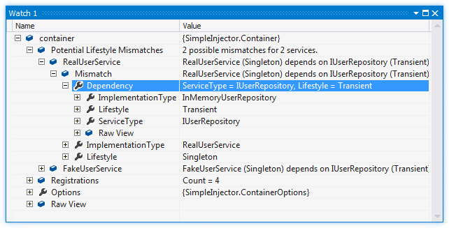

The component depends on a service with a lifestyle that is shorter than that of the component.
In general, components should only depend on other components that are configured to live at least as long. In other words, it is safe for a transient component to depend on a singleton, but not the other way around. Since components store a reference to their dependencies in (private) instance fields, those dependencies are kept alive for the lifetime of that component. This means that dependencies that are configured with a shorter lifetime than their consumer, accidentally live longer than intended. This can lead to all sorts of bugs, such as hard to debug multi-threading issues.
The Diagnostic Services detect this kind of misconfiguration and report it. The container will be able to compare all built-in lifestyles (and sometimes even custom lifestyles). Here is an overview of the built-in lifestyles ordered by their length:
There are multiple ways to fix this violation:
Do not ignore these warnings. False positives for this warning are rare and even when they occur, the registration or the application design can always be changed in a way that the warning disappears.
The following example shows a configuration that will trigger the warning:
var container = new Container();
container.Register<IUserRepository, InMemoryUserRepository>(Lifestyle.Transient);
// RealUserService depends on IUserRepository
container.RegisterSingle<RealUserService>();
// FakeUserService depends on IUserRepository
container.RegisterSingle<FakeUserService>();
container.Verify();
The RealUserService component is registered as Singleton but it depends on IUserRepository which is configured with the shorter Transient lifestyle. Below is an image that shows the output for this configuration in a watch window. The watch window shows two mismatches and one of the warnings is unfolded.
The following example shows how to query the Diagnostic API for Potential Lifetime Mismatches:
// using SimpleInjector.Diagnostics;
var container = /* get verified container */;
var results = Analyzer.Analyze(container)
.OfType<PotentialLifestyleMismatchDiagnosticResult>();
foreach (var result in results) {
Console.WriteLine(result.Description);
Console.WriteLine("Lifestyle of service: " +
result.Relationship.Lifestyle.Name);
Console.WriteLine("Lifestyle of service's dependency: " +
result.Relationship.Dependency.Lifestyle.Name);
}
A Hybrid lifestyle is a mix between two or more other lifestyles. Here is an example of a custom lifestyle that mixes the Transient and Singleton lifestyles together:
var hybrid = Lifestyle.CreateHybrid(
lifestyleSelector: () => someCondition,
trueLifestyle: Lifestyle.Transient,
falseLifestyle: Lifestyle.Singleton);
As explained, components should only depend on longer lived components. But how long does a component with this hybrid lifestyle live? For components that are configured with the lifestyle defined above, it depends on the implementation of someCondition. But without taking this condition into consideration, we can say that it will at most live as long as the longest wrapped lifestyle (Singleton in this case) and at least live as long as shortest wrapped lifestyle (in this case Transient).
From the Diagnostic Services‘ perspective, a component can only safely depend on a hybrid lifestyled service if the consuming component’s lifestyle is shorter than or equal the shortest lifestyle the hybrid is composed of. On the other hand, a hybrid lifestyled component can only safely depend on another service when the longest lifestyle of the hybrid is shorter than or equal to the lifestyle of the dependency. Thus, when a relationship between a component and its dependency is evaluated by the Diagnostic Services, the +longest+ lifestyle is used in the comparison when the hybrid is part of the consuming component, and the +shortest+ lifestyle is used when the hybrid is part of the dependency.
This does imply that two components with the same hybrid lifestyle can’t safely depend on each other. This is true since in theory the supplied predicate could change results in each call. In practice however, those components would usually be able safely relate, since it is normally unlikely that the predicate changes lifestyles within a single object graph. This is an exception the Diagnostic Services can make pretty safely. From the Diagnostic Services‘ perspective, components can safely be related when both share the exact same lifestyle instance and no warning will be displayed in this case. This does mean however, that you should be very careful using predicates that change the lifestyle during the object graph.